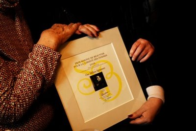
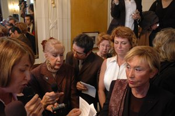

پذيرش > اخبار > مشروح سخنان کریستوا در مراسم اهدای جایزه دوبووار و دیگر گزارش هایی از مراسم اهدای (...)

 مشروح سخنان کریستوا در مراسم اهدای جایزه دوبووار و دیگر گزارش هایی از مراسم اهدای جایزه مشروح سخنان کریستوا در مراسم اهدای جایزه دوبووار و دیگر گزارش هایی از مراسم اهدای جایزه
6 بهمن 1387 - - نسخه قابل چاپ
گزارش هایی از مراسم اهدای جایزه دوبووار

عکس : کمپین پاریس
تغییربرای برابری -حمید حمیدی - پاتوق" سیمون دوبوار"و"ژان پل سارتر"،(کافه "دوماگو")شهر پاریس در فرانسه، روز چهارشنبه 21ژانویه سال 2009 با حضور جمعی از تلاشگران و دوستداران کمپین یک میلیون امضاء برای رفع قوانین تبعیض آمیز شاهد اهداء اولین جایزه بین المللی به جنبش زنان ایران بود.جایزه"سیمون دوبوار برای آزادی زنان" در سال 2009 توسط هئیت داوران بین المللی به سبب جسارت و نو آوری به کمپین یک میلیون امضاء اختصاص یافت.
در این مراسم علاوه بر خانم سیمین بهبهانی از کمپین،خانمها ژولیا کریستوا** و سیلوی لو بن دوبوار(دختر خوانده سیمون دوبوار) و "کریستین آلبانل"(وزیر فرهنگ دولت فرانسه ) حضور داشتند.
مراسم با نمایش "کلیپ کمپین" آغاز شد و بعد از آن خانم ژولیا کریستوا سخنان خود را آغاز نمود.
ژولیا کریستوا : به زنان در حرکت های برابری طلبانه شان می گوییم ما نیز حامی حرکت آنان هستیم

خانمها و آقایان،ضمن سلام و تشکر از حضور گسترده شما در این رستوران افسانه ای که "پاتوق" ژان پل سارتر و سیمون دوبوار بوده است،مایلم از آقای ژاک ماتییو مدیریت رستوران و سایر همکاران ایشان برای امکان برگزاری این مراسم در این مکان مراتب سپاس خود را اعلام دارم.
می دانید که ما در وضعیت دشواری بسر می بریم. در همه جا انفجار در جریان است. در محل عبور مردم، در بانکها و...، بطوریکه باورها هم در هم ریخته است.عقل و منطق نیز به هم ریخته است. در عین حال با این همه در هم ریختگی به نظر می رسد حرکت ما در حال بیان خود است.
باید تاکید کنم دراین دوران بحرانی که در آن قرار گرفته ایم، تمام کسانی که بیشتر رنج می برند، بیشتر در معرض فرودستی قرار دارند. به ویژه موضوع زنان هیچگاه در مرکز موضوعات اصلی قرار نداشته وبه همین دلیل زنان هم در کشورهای توسعه نیافته وهم در کشورهائی که دمکراسی پیشرفته نیز دارند، تحت فشار هستند. موقعیت حقوقی مادران، سهمیه بندی زنان و موضوعاتی از این قبیل گواه این مدعاست.
در این شرایط بود که ما در سال گذشته، فکر تاسیس اهداء جایزه یادبود "سیمون دوبوار" به زنان و حرکتهائی که برای برابر حقوقی تلاش می کنند را عملی کردیم. بنیان گذاران این جایزه تصمیم گرفتند با اهداء این جایزه به زنان و حرکت های برابری طلبانه بگویند که ما نیز حامی حرکت آنان هستیم.
مایلم تاکید کنم که مبارزه میلیونی زنان که قبل و بعد از سیمون دوبوار وجود داشته ،توانسته است راهگشای مبارزات زنان باشد. در این دوران ما شاهد تاثیر پذیری جنبش های زنان از تفکرات سیمون دوبوارهستیم.جنبش زنان و حرکت های رادیکال فرانسه که از سال 1968 آغاز شده بود نیز با تاثیر پذیری از تفکرات و اندیشه های دوبوار به شکل واقعی خود رسیدند.(ایشان اشاره ای نیز به سایر جنبش های زنان در سایر کشورها نمود.)
ما همواره از مبارزات زنان در کشورهای مختلف با مذاهب و فرهنگ های مختلف حمایت می کنیم. سیمون دوبواراین حمایت جهانی را بنیان نهاد و ما نیز ادامه دهنده راه او هستیم.
این تحول زمانی رخ داد که سیمون دوبوار با کتاب جنس دوم توانست تحولات اساسی در افکار زنان و جنبش های ایشان ایجاد نماید. او به مثابه یک فیلسوف و یک زن آزاده تجارب خود را در اختیار دیگران قرار داد. باید اذعان کرد فمینیسم مدرن، مدیون تفکرات و اندیشه های سیمون دوبواراست.
ما این جایزه را بنیان نهادیم تا توجه همگان را نسبت به اثرات جاودان سیمون دوبوار جلب کنیم .خصوصأ در این بحران سخت و دشواربرآنیم که آثار او را دوباره خوانی کنیم تا بتوانیم ادامه دهندگانی شایسته برای حمایت از تمامی جنبش های زنان در اقصا نقاط جهان باشیم.
با تاسیس این جایزه، ریاست انتشارات "گالیمار"از این تصمیم بسیار استقبال نمود و حمایت خود را از این جایزه
اعلام نمود که ما نیز از ایشان سپاسگزاری می کنیم. باید تاکید کنم، با بازخوانی آثار سیمون دوبوار است که ما می توانیم جوانان و دانشجویان را با تفکرات وی آشنا سازیم تا آنها نیز بتوانند این تفکرات را به هم نسل های خود منتقل کنند.خوشبختانه این آثار،جای خود را در اروپا و سایر کشورها در افکار و رفتار جوانان جا انداخته است،واز این رو شاهد تلاش جوانان در این راه هستیم.
با توجه به روحیات و افکار سیمون دوبوار که باور داشت،"ما زن به دنیا نمی آئیم بلکه زن می شویم"،امروز این جایزه را به زنان مبارز ایران در کمپین یک میلیون امضاء تقدیم می کنیم.
این زنان با تحمیل تمامی دشواری ها به راه خود ادامه می دهند و این حق تمامی زنان است که تا مرحله ای که می خواهند،پیشرفت نمایند.این پیشرفت میسر نمی شود،مگر اینکه شرایط لازم برای این پیشرفت فراهم گردد.
در ادامه برنامه وزیر فرهنگ فرانسه گفت : ایران فقط پرونده هسته ای نیست،ایران کشوری است که انسانهای فراوانی برای احقاق حقوق انسانی خود به پا خاسته اند.و ما می خواهیم به این انسانها بگوئیم که شما تنها نیستید.
سخنران دیگر، دختر خوانده سیمون دوبوار بود که ریاست افتخاری این جایزه را بعهده دارد.در گفتگوئی که با ایشان داشتم ، ایشان با ذکر این مطلب که قرار بود که به اتفاق سیمون دوبوار به ایران برویم که با تغییرات سال 1979 محقق نشد. ایشان به نقل از سیمون دوبوار در رابطه با زنان ایران اشاره کرد.زنان ایران در منطقه خویش از ظرفیت های بالائی برای احقاق حقوق انسانی خود برخوردار می باشند و امیدوارم با تلاش زنان و مردان حامی آنها این حقوق تضیع شده،محقق گردد و دیگر زنان جهان و زنان ایران "جنس دوم" محسوب نگردند.
سیمین بهبهانی : این جایزه را افتخار خودم و زنان ایرانی می دانم
در ادامه لوح یادبود جایزه سیمون دوبوار در سال 2009 به خانم سیمین بهبهانی به نمایندگی از کمپین یک میلیون امضاء،اهدا شد و ایشان در سخنان خود با سپاس و تشکر از بنیان گذاران این جایزه و هیئت داوران به خاطر اهداءاین جایزه به زنان ایرانی،خاطر نشان نمود که خیلی خرسند و شادمان است که از سوی زنان ایران این جایزه را دریافت می نماید.
ایشان به حرکت زنان ایران که با آزار و اذیت و بازداشت،توانستند چهره به چهره و خانه به خانه موجبات افزایش آگاهی زنان و شناساندن اهداف کمپین باشند،اشاره نمود وبا بغضی در کلام خود بیان داشت:زنان ایرانی در این راه،"کتک خورده اند، توهين و تحقير شنيده اند، زنداني شده اند، اما از پا ننشسته اند."
در ادامه خانم سیمین بهبهانی لوح دریافتی را با دستان لرزان خویش به بالا میبرد و آنرا افتخاری برای خود و زنان ایرانی میداند.ایشان با تاکید بر این موضوع که در نظامنامه کمپین دریافت هر وجهی تحت هر عنوانی، ازاشخاص حقیقی و حقوقی که از اعضاء کمپین نمی باشند،بخش مالی این جایزه را در اختیار بنیان گذاران جایزه سیمون دوبوار قرار داد،تا با تصمیم خودشان برای اهداف مشابه استفاده گردد.
در پایان خانم بهبهانی از تمامی افرادی که با حضور و تلاش های خود ،موجبات اهداءاین جایزه را برای زنان ایران فراهم نمودند، قدردانی بعمل آورد و از خانم شهلا شفیق به خاطر تلاشهایشان سپاس گذاری نمود.
این مراسم در ساعت 2 بعد از ظهر،در حالیکه غرور و شادمانی و اشک های شوق را می شد در بخشی از حامیان برابر حقوقی زنان با مردان مشاهده نمود به پایان رسید و اولین افتخار بین المللی جنبش زنان ایران در تاریخ ثبت گردید.
کمپین پاریس : کافه "دو مگو"پاریس ، روز چهارشنبه بیست و یکم ژانویه میزبان سيمين بهبهانی بود ثا درجایی که سیمون دوبووار، نویسندۀ نامدار فرانسوی کثاب پر آوازۀ "جنس دوم"را خلق کرده اسث ، جایزۀ بنیاد این فمینیست فرانسوی یه کمپين يک ميليون امضا اهدا شود.
خانم ژوليا کريستوا، که از مبتکران این جایزه است، در موردش چنين توضيح مي دهد:"اين جايزه به مردان وزناني اهدا مي شود که در چارچوب انديشه آزاد سيمون دوبووار مي کوشند سهم خويش رادر ارتقاء حقوق زنان در سراسر جهان ايفا کنند." وی همچنین دلیل برگزیده شدن کمپين را حرکت شجاعانه زنان ایران برای رسیدن به برابری که خواست اولیه سیمون دوبوار بود عنوان کرد.
اين جايزه با مشارکت فرانس کولتور، کتابخانه ملي فرانسه، مرکز ملي اسناد وکتاب اين کشور و انتشارات گاليمار، و توسط يک گروه داوري متشکل از اهالي فرهنگ فرانسه و ديگر کشورهاي جهان، و پس از بررسي فعاليت هاي افراد و يا نهادهايي که در زمينه ارتقا حقوق زنان فعاليت مي کنند، اهدا مي شود.
کریستین آلبانل، وزیر فرهنگ فرانسه از مبارزه زنان ايران و همچنين از اعضای کمپين يک ميليون امضاء تقدير کرد و لوح ثقدیر این جایزه را به سيمين بهبهانی اهدا نمود.شاعر ایرانی نیز درپایان مراسم شعری را می خواند که واژگان غشق وبوسه را در خود دارد ،واژگانی که برای زنان واژگان ممنوغ یوده و هست.
اغضای شاخه کمپين يک ميليون امضا در فرانسه در حالیکه پین های کمپين را بر سبنه داشتند از شخصیت های برجسته ای چون سبلوی لوبن دوبوار، دخثرسيمون دوبووار، کریستین آلبانل، وزیر فرهنگ فرانسه والویه پوارو دروور، نویسنده و دیپلمات در حمایت از کمپین امضاء گرفتند.فیلمی که از این مراسم توسط این گروه گرفته شده است به زودی در روی این وبلا گ قرار می گیرد.
و همین طور ببینید دیگر گزارش ها از مراسم اهدای جایزه دوبووار
شبکه بین المللی همبستگی با مبارزات زنان ایران / گزارشی از کافه «دو ماگو» Deux Magots ، در روز اهدا جایزه به کمپین یک میلیون امضا در ایران/ آنه آسیه پاک
روز /جایزه بین المللی برای زنان کمپین
*سیمون دوبوار کیست؟
سیمون دوبوار در 9 ژانویه سال 1908در پاریس زاده شد و تحصیلات خود را در دانشگاه سوربون به پایان رساند.
در سال 1926 به جنبش سوسیالیستی فرانسه پیوست وهم زمان به نویسندگی ادامه داد. در سال 1943 از شغل معلمی استعفاء داد و تنها به نویسندگی پرداخت.در سال 1954 به خاطر رمانش،"ماندارین ها" که در باره روشنفکران پاریس و بحث های میان آنان بود،به دریافت جایزه ادبی کنکرت نائل آمد.او در آثارش به نقد مناسبات و روابط اجتماعی که بوسیله مردان تعین و اداره می شوند اشاره داشت و طرفدار برابر حقوقی زنان و مردان بود. در سال 1951 با اثر معروفش،"جنس دوم" نقش بسزائی در حرکت های فمینیستی ایجاد نمود.
سیمون دوبوار در 14 آپریل 1986 در پاریس در گذشت.او یکی از زنان روشنفکر زمان خود به شمار میرفت که
توانست با آثار و انتشار عقایدش زندگی بسیاری از زنان را تغییر دهد و درهای آگاهی را برویشان بگشاید.دوبوار خود در پیشگفتار کتاب می نویسد: « اگر کتاب من به زن ها کمک کرده علت این است که این کتاب افکار آن ها را بیان کرده است و زن ها نیز متقابلا حقیقت شان را به آن بخشیده اند.» همان طور که خالق «جنس دوم» می گوید نوشتن این کتاب با این پرسش آغاز شد که زن بودنش چه تاثیری در سرنوشتش دارد و به تدریج به این نتیجه رسید که: «برای این کار نخست باید وضع زنان را به طور کلی توصیف» کند. بدین سان بود که سیمون دوبوار که به مرز چهل سالگی پا می گذاشت به واقعیتی دست یافت که تا آن موقع آن را منکر می شد یعنی زن بودنش را. از این رو نوشت: «امروز می دانم که اگر بخواهم خود را تعریف کنم، نخستین چیزی که باید بگویم این است که من یک زن هستم».پرسش کانونی که دوبووار در «جنس دوم» در صدد پاسخ به آن برآمد این است که: «منشاء این که زن به عنوان «دیگری» در جهان شناخته شده چیست؟» به نظر سیمون دوبووار طرد جهان بینی زنانه موجود، عامل آزادی زنان است و بدین سان است که زنان می توانند به حیطه وجدان و خودآگاهی مستقل و اصیل زنانه برسند. تحلیل های دوبووار در جنس دوم دستاوردهای مهمی برای نهضت فمینیستی به همراه داشت اگر چه بعدها بخش هایی از نظرات او توسط برخی فمینیست ها به نقد کشیده شد.دوبووار دیباچه کتاب جنس دوم خود را چنین آغاز می کند: « مشاجره برابری حقوق زن و مرد به اندازه کافی مرکب قلم صرف خود کرده است و این زمان تقریبا خاتمه یافته است. با این همه باز از آن سخن به میان می آید و به نظر نمی رسد که یاوه های حجیمی که در طول قرن اخیر بیان گردیده، مسئله را خیلی روشن کرده باشد.».در آوریل 1971 هنگامی که جنبش آزادی زنان (M L F ) بیانیه «343 زن» را صادر کرد سیمون دوبووار به این سازمان پیوست و یکی از امضا کنندگان این بیانیه شد.
**ژولیا کریستوا:
ژولیا کریستوا یکی از متفکران اندیشه فمینیستی فرانسه است.ایشان در سال 1941 در بلغارستان زاده شد و در سال 1966 به فرانسه مهاجرت نمود و متاثر از فرهنگ زندگی در فرانسه گردید.ایشان استاد دانشگاه و رئیس یکی از مراکز بزرگ تحقیقاتی در فرانسه است.ایشان در رشته فلسفه تدریس می کنند و از پایه گذاران جایزه سیمون دوبوار هستند.آثار و کتب ژولیا کریستوا،جزئی از فلسفه قرن بیستم فرانسه محسوب می گردد.
ارسال به
بالاترین
،
توییتر
،
فریندفید
،
فیسبوک
در همين بخش :
 پروین ذبیحی برنده جایزه حقوق بشری سازمان غيردولتى اتريشى سودويند شد پروین ذبیحی برنده جایزه حقوق بشری سازمان غيردولتى اتريشى سودويند شد
پخش کارت پستال و بروشور در روز جهانی زن در تهران
تمدید زمان برای امضای بیانیهی جمعی از فعالان زن به مناسبت هشت مارس
مجوزی که در نطفه خفه شد
بیش از 2000 امضا در اعتراض به تبعیض های آموزشی به مجلس تحویل داده شد
ديگر بخش ها :
طرح یک میلیون امضا
|
مقالات
|
سایت نوشته ها
|
اخبار
|
گزارش كمپين
|
گفت و گو
|
علیه سکوت
|
كوچه به كوچه
|
نامه های شما
|
گزارش ویژه
|
گفتگو با اعضا
|
ویژه سالگرد کمپین
|
تصویر برابری
|
دل آرام علی
|
تریبون
|
مقالات
|
تاریخ شفاهی
|
خارج از چارچوب
|
کتابخانه
|
درباره کمپین
|
کمپین در شهرها
|
کمپین در بند
|
صدای تغییر
|
ویژه 22 خرداد
|
لایحه حمایت از خانواده
|
گالری
|
عشا مومنی
|
امیر یعقوبعلی
|
خدیجه مقدم
|
راحله عسگری زاده و نسیم خسروی
|
پروین اردلان،جلوه جواهری، مریم حسین خواه، ناهید کشاورز
|
زینب پیغمبرزاده
|
سعیده امین، سارا ایمانیان، محبوبه حسین زاده، ناهید کشاورز و همایون نامی
|
احترام شادفر
|
نسیم سرابندی زاده،فاطمه دهدشتی
|
وبلاگ مهمان
|
پرونده خرم آباد
|
دستگیری ها
|
مریم مالک
|
پرستو اللهیاری
|
مهرنوش اعتمادی
|
سمیه رشیدی
|
Other Languages
|
همراهان
|
«فراخوان کمپین ده روز با بهاره هدایت»
| English
|